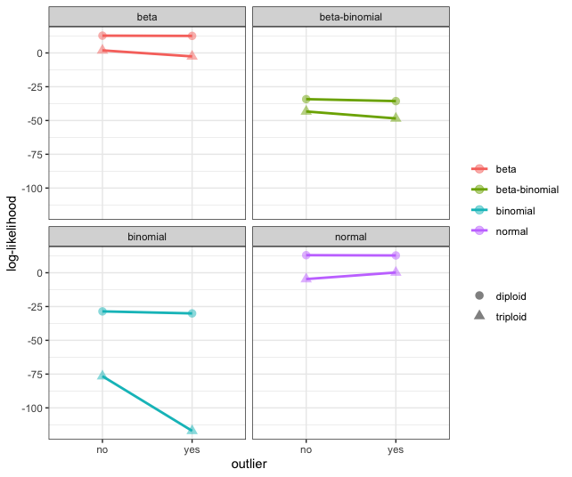
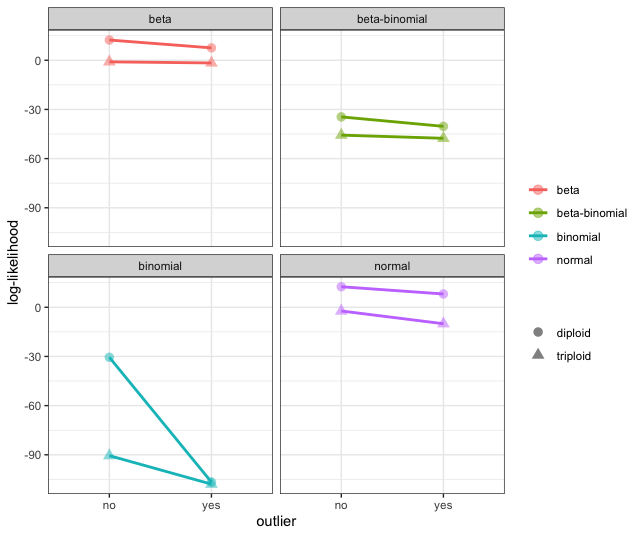

Here we examine the effect of high coverage outliers.
Simulate Data
Following Figure S2 from WeiB et al. 2018 (nQuire), we simulate 10 sites with a binomial distribution with a probability of 0.5 and coverage equal to 100. For the data set with an outlier, we simulate a single site with the coverage equal to 400.
dipNorm <- data.frame(matrix(ncol = 3, nrow =10))
for(i in 1:10){
dipNorm[i,1] <- 100
dipNorm[i,2] <- rbinom(n = 1, size = 100, prob = 0.5)
dipNorm[i,3] <- dipNorm[i,1] - dipNorm[i,2]
}Comparing the Log-Likelihood
We then calculate a simple log-likelihood given the expected parameter values for a diploid and triploid model. In all cases, we found the diploid to be the most likely model for the simulated data. Unlike the simulations from nQuire, we do not find as dramatic of an effect on log-likelihood calculations from outliers. We attempted to partition the data to match Figure S2 from WeiB et al. 2018, however, we never could create the binomial distribution with the most likely model as the triploid.

However, when the allele frequency of the high coverage outlier deviates from the expected (in this case, we set the probability as 0.2), we do see that the log-likelihood for the binomial and normal distributions are greatly effected by this outlier. However, we find that the diploid model is more likely in all cases. Noteably, we only see small shifts in the log-likelihood associated with the beta and beta-binomial distributions.
